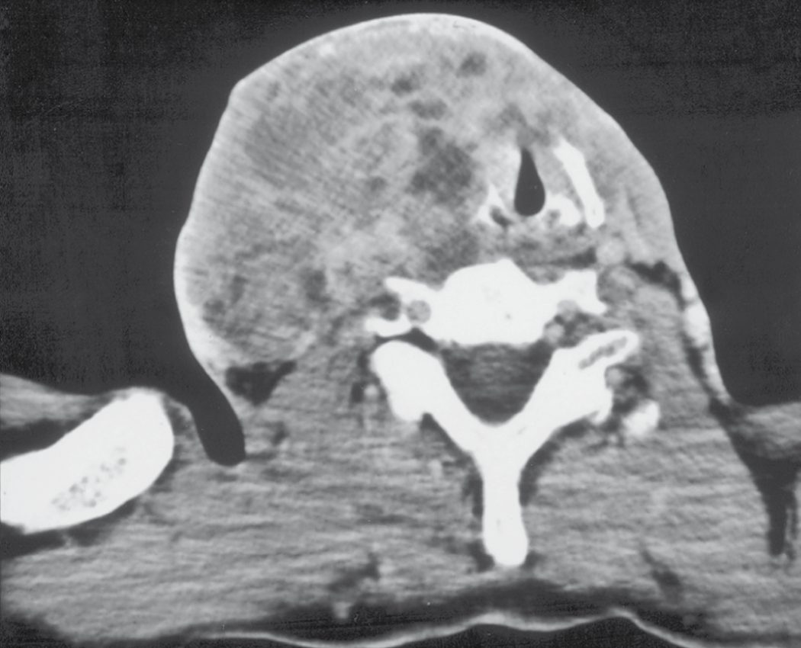
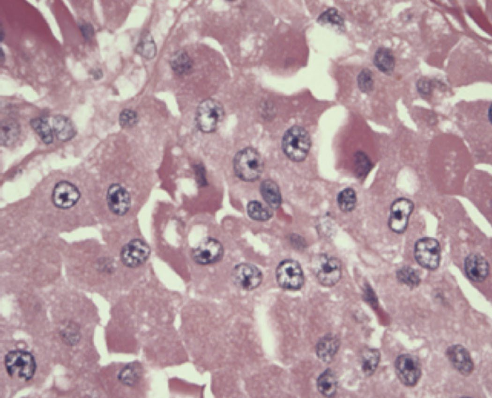

Thyroid Cancer
Summary
- Thyroid cancer is rare, accounting for about 1% of new malignancies, but its incidence is rising because of increased detection of small papillary tumours on imaging [1][2].
- Differentiated thyroid cancer (papillary and follicular) comprises the great majority of cases and carries an excellent prognosis, whereas medullary, poorly differentiated and anaplastic thyroid cancers are progressively more aggressive [1][2].
- Papillary carcinoma alone accounts for 84% of incident cases, follicular for 11%, medullary for 2% and anaplastic for 1%; anaplastic carcinoma is among the most aggressive and lethal solid tumours of any organ system, with a nearly 100% mortality rate [3].
- Diagnosis relies on ultrasound risk stratification and FNAC, and treatment is primarily surgical (lobectomy or total thyroidectomy) with increasingly selective use of radioactive iodine [2][3].
- The UK has no NICE clinical guideline on thyroid cancer.
- What governs practice instead is the UK National Multidisciplinary Guidelines, the official guideline endorsed by the specialty associations involved in head and neck cancer care in the UK, based on the 2014 British Thyroid Association / Royal College of Physicians guidelines [4].
- NICE's only contribution to the pathway is the referral trigger in NG12 and a small set of technology appraisals for advanced disease [5].
- Where the UK guideline and the textbook account differ, on the size threshold for total thyroidectomy, on prophylactic central neck dissection, on whether subtotal thyroidectomy is ever acceptable, and on the indications for radioiodine, the divergence is set out in the relevant section below.
The UK epidemiology is worth fixing first: thyroid cancer incidence in the UK is approximately 5 per 100,000 women and 2 per 100,000 men, and although thyroid cancer is the most common endocrine malignancy it accounts for only 1 per cent of all malignancies; incidence is rising while survival rates remain static [4]. Long-term prognosis for differentiated thyroid cancer is excellent, with adult survival of 92–98 per cent at 10-year follow-up, but 5–20 per cent develop local or regional recurrence requiring further treatment and 10–15 per cent go on to develop distant metastases [4].
Definition
- Thyroid cancer comprises malignant neoplasms arising from thyroid follicular epithelium (papillary, follicular, oncocytic/Hürthle cell, poorly differentiated and anaplastic carcinoma) or from parafollicular C cells (medullary thyroid cancer), as well as rare primary thyroid lymphoma and metastases to the thyroid [2][3].
- Differentiated thyroid cancers are so called because they arise from follicular epithelial cells and generally retain the ability to organify iodine.
- Poorly differentiated and anaplastic cancers are also thought to arise from follicular cells but behave far more aggressively because of that loss of differentiation, while medullary thyroid cancer arises from a different cell entirely [3].
- Differentiated thyroid cancer (DTC) comprises papillary thyroid carcinoma (PTC, 85%) and follicular thyroid carcinoma (FTC, 15%) [1].
- Browse's frames the same taxonomy from the bedside: there are three carcinomas of the follicular cells (papillary, follicular and anaplastic) of which the first two are 'well differentiated', meaning that the majority maintain thyroid function and take up iodine, while anaplastic cancer is undifferentiated and does neither.
- The parafollicular (C) cells give rise to medullary carcinoma, and lymphoid tissue within the thyroid can undergo malignant change to lymphoma, which is more common in patients with Hashimoto's disease [6].
- The thyroid is a very vascular organ, so secondary deposits from kidney, melanoma, breast, colon and lung are found at autopsy, but they rarely become large enough to present as a thyroid swelling; the majority of thyroid neoplasms presenting as a lump in the neck are primary thyroid tumours [6].
Low-risk follicular thyroid neoplasms
- The 2022 WHO classification of thyroid neoplasms introduced a third category between benign and malignant: low-risk, comprising noninvasive follicular thyroid neoplasm with papillary-like nuclear features (NIFTP), thyroid tumours of uncertain malignant potential, and hyalinizing trabecular tumour; these have the potential to metastasise but the incidence of metastasis is extremely low [3].
- NIFTP was historically called the noninvasive encapsulated follicular variant of PTC.
- A 2016 retrospective analysis of 109 patients with the encapsulated variant (median follow-up 13 years) and 101 with invasive follicular-variant PTC (median 3.5 years) found that none of the encapsulated group died or had evidence of disease after treatment, against a 12% rate of adverse oncological outcomes in the invasive cohort, which is why the terminology was changed to remove the connotation of malignancy [3].
- Thyroid lobectomy is considered adequate treatment for NIFTP, and neither TSH suppression nor radioiodine is required [3].
- The 2022 classification also retired the term Hürthle cell, a historical misnomer, in favour of oncocytic carcinoma of the thyroid [3].
Pathophysiology
- The most important identifiable aetiological factor in differentiated thyroid carcinoma, particularly papillary, is irradiation of the thyroid under 5 years of age; in Gomel, Ukraine, childhood thyroid cancer incidence rose from under 1 to 96 per million following the Chernobyl disaster [2].
- Short-latency aggressive PTC is associated with the ret/PTC3 oncogene, while later-developing, possibly less aggressive tumours are associated with ret/PTC1 [2].
- Genetic mutations associated with DTC include BRAF, RAS and TERT; high-risk prognostic factors include age over 45, male gender, high-risk cell type, local invasion and high-risk mutations such as p53 and TERT [1].
Papillary carcinoma
- PTC is the most common thyroid cancer overall at 84% of incident cases, with a 3:1 female-to-male ratio and peak incidence in the third to fifth decades [3].
- It disseminates primarily by the lymphatic route to the central and lateral cervical compartments, although distant metastases to lung and bone occur in up to 3% to 5% of patients [3].
- Histologically it shows complex branching papillae with pseudoinclusions, nuclear grooving and psammoma bodies; the follicular variant has a similar prognosis to classical PTC and shows well-defined follicles with minimal papillary projections, while the tall cell, hobnail, diffuse sclerosing and columnar variants together comprise less than 1% of all PTCs and are more aggressive [3].
- PTC shows characteristic cytological features including nuclear grooves, intranuclear inclusions and optically clear nuclei ('Orphan Annie cells') [1][7].
- Browse's adds the two facts most useful at the bedside: two-thirds of papillary carcinomas are confined to the thyroid at presentation, but the cervical lymph glands may be palpable long before the primary lesion is, and 30–50% of tumours are multifocal [6].
- A preoperative diagnosis of classical PTC can be made on FNAC (Thy5) because of its distinctive cytology (nuclear inclusions and grooves, papillary formations, and absence of colloid) and psammoma bodies are present in 50% of histological specimens [6].

Follicular and oncocytic carcinoma
- FTC is the second most common DTC, occurring in older adults with peak incidence in the fourth and sixth decades and the same 3:1 female predominance; its pattern of spread is haematogenous, typically to lungs and bone, and regional nodal metastases occur in less than 10% of cases [3].
- Cytology ranges from virtually normal-appearing follicular cells to nuclear atypia, discohesion, hypercellularity and microfollicles, so FTC cannot be reliably diagnosed by FNA; the diagnosis is definitively made only on histology, by the presence of capsular and/or vascular invasion [3].
- Follicular carcinoma can only be distinguished from follicular adenoma by histological architecture, not by cytology [2].
- Minimally invasive tumours invade the capsule only, while widely invasive variants invade local structures and spread haematogenously, most commonly to bone [1][7].
- Oncocytic carcinoma is the 2022 WHO term for an invasive malignant follicular-cell neoplasm with at least 75% oncocytic cells.
- It accounts for 5% of DTCs in the United States, occurs in the sixth and seventh decades, metastasises by both lymphatic and haematogenous routes with distant metastases present in up to 20% at initial diagnosis, and has a 5-year overall survival of about 85% falling to only 24% where distant metastases are present at diagnosis [3].
- Crucially it is less RAI-avid than other DTCs, which makes recurrence harder to treat, although RAI is potentially associated with improved survival in oncocytic carcinomas of 2 to 4 cm [3].
- Hürthle cell tumours are a rare follicular variant in which oxyphil cells predominate and carry a poorer prognosis; most Hürthle cell lesions are benign adenomas, and malignant versus benign cannot be determined on biopsy alone [2][7].
Medullary carcinoma
- Medullary thyroid cancer arises from parafollicular C cells of neural crest origin, secretes calcitonin and CEA, and shows amyloid deposition and characteristic 'cell balls' on histology; C-cell hyperplasia is considered premalignant [2][7].
- Histologically it shows plasmacytoid morphology with eccentric round nuclei, 'salt-and-pepper' chromatin, small nucleoli and amyloid infiltrate, with cytoplasmic positivity on calcitonin staining [3].
- The RET proto-oncogene, located on chromosome 10q11.2, encodes a transmembrane tyrosine kinase receptor regulating cell growth and survival.
- Virtually all patients with hereditary MTC carry one of over 100 described germline RET mutations, each with its own profile of MTC aggressiveness and frequency of other syndromic manifestations, and mutations in codon C634 are the most common [3].
- Approximately 50% of sporadic MTCs carry somatic RET mutations, which are associated with a higher incidence of nodal metastases, persistent disease and disease-specific mortality, and therefore warrant more aggressive surveillance and treatment [3].
- Browse's records the clinical split: 75% of cases are sporadic with a mean age of 40–60 years and 20% multifocal, while 25% are familial with a mean age of 35 years, 90% bilateral and multifocal, and associated with diffuse C-cell hyperplasia that precedes the development of cancer [6].

Anaplastic carcinoma
- Anaplastic thyroid cancer is linked to loss of the p53 tumour suppressor gene, shows squamoid, spindle cell or giant cell histology, and at least 50% arise from pre-existing DTC [1].
- Sabiston puts the mean age at diagnosis at 65 years with a 2:1 female-to-male ratio, records a history of multinodular goitre or previous thyroidectomy in up to 50% of patients, and attributes its origin to dedifferentiation from follicular-cell DTC (particularly PTC, which coexists in at least 30% of cases) with the dedifferentiation event involving mutations in TP53, PIK3CA or catenin-family genes [3].
- ATCs typically do not secrete or stain for thyroglobulin, though differentiated components may retain the ability to make it [3].

Oncogenes and the MAPK pathway
- RET on chromosome 10 encodes a receptor tyrosine kinase binding glial-derived neurotrophic factor and neurturin; germline mutations cause MEN2A, MEN2B and familial medullary cancer, somatic mutations occur in 30% of medullary cancers and in phaeochromocytomas, and at least 15 RET/PTC rearrangements, early events favoured by young age and radiation, present in up to 70% of Chernobyl childhood papillary cancers, chiefly RET/PTC1 and RET/PTC3 (the latter linked to solid-type, higher-stage, more aggressive tumours), constitutively activate the kinase and signal through Ras, Raf and MEK to ERK/MAPK [8].
- Mutant RAS is found in 20–40% of follicular adenomas and carcinomas, multinodular goitres and papillary and anaplastic cancers; BRAF T1799A (V600E) occurs in papillary (average 44%) and anaplastic (22%) but not follicular cancers and predicts extrathyroidal extension, older age, nodal and distant metastasis, recurrence even in early disease and mortality, so some propose using FNA BRAF status to widen surgery, raise RAI dose and tighten suppression and follow-up; p53 mutation is rare in papillary but common in undifferentiated cancer; PAX8/PPARγ1 fusion drives follicular neoplasms; TERT promoter mutations mark poor disease-specific and disease-free survival; and PIK3CA and AKT1 mutations are rare late events [8].
- Papillary cancers are hard and whitish and stay flat on sectioning where benign nodules bulge; multifocality reaches 85% microscopically and raises nodal risk; the tall-cell, insular, columnar, diffuse sclerosing, clear-cell, trabecular and poorly differentiated variants make up about 1% with worse prognosis; occult papillary cancer is found in 2–36% of glands at autopsy and about 25% of microcarcinomas have occult nodal metastases; and distant metastases eventually develop in up to 20%, to lung, then bone, liver and brain [8].
- Follicular cancer (10%, commoner in iodine deficiency and declining in the United States, female 3:1, mean age 50) presents with nodes in only about 5% and is hyperfunctioning in under 1%; minimally invasive tumours show microscopic capsular penetration without parenchymal extension or invasion of venous-calibre vessels in or just outside the capsule, whereas widely invasive tumours breach large vessels or broad capsular areas and may be unencapsulated, with tumour thrombus in the middle thyroid or jugular veins sometimes evident at operation [8].
- Hürthle cell carcinoma (about 3%, a WHO follicular subtype of mitochondria-packed eosinophilic oxyphil cells) is multifocal and bilateral in about 30%, takes up RAI in only about 5%, spreads to nodes in 25% and carries about 20% 10-year mortality; medullary cancer arises from C cells of ultimobranchial origin concentrated superolaterally, is unilateral in 80% of sporadic but bilateral in up to 90% of familial cases with premalignant C-cell hyperplasia, and consists of polygonal or spindle cells in sheets separated by collagen and amyloid, staining for calcitonin, CEA and calcitonin gene-related peptide [8].
Clinical features
- The commonest presentation is an asymptomatic thyroid nodule; the risk of malignancy in a thyroid nodule is 7–15% [1].
- Extremes of age (under 16 or over 70 years) are risk factors for cancer, and children typically present with more advanced disease; other malignant features include voice change, cervical lymphadenopathy and a rapidly enlarging goitre [1].
- Enlarged cervical lymph nodes may be the presentation of PTC, and RLN paralysis is very suggestive of locally advanced disease [2].
- DTCs are typically slow-growing, painless and often asymptomatic; acute pain is more typical of a benign process such as thyroiditis or a bleed into a cyst, but can also indicate the more aggressive cancers, MTC, primary thyroid lymphoma and ATC [3].
- Concerning features are rapid nodule growth and hoarseness, coughing or dysphagia, which could signal local invasion into the RLN and aerodigestive tract; on palpation DTC varies from soft to firm, and a firm fixed mass suggests locally advanced disease [3].
- Anaplastic cancers are usually hard, irregular and infiltrating; differentiated carcinoma may be suspiciously firm and irregular but is often indistinguishable from a benign swelling, and small papillary tumours may be impalpable even with lymphatic metastases present [2].
- Pain, often referred to the ear, suggests nerve involvement by infiltrating tumour [2].

Examination findings in differentiated carcinoma
- The primary nodule may vary from an impalpable lesion under 1 cm to a nodule over 5 cm; when palpable it is usually spherical, smooth and clearly defined but its surface may be bosselated, and it may present as the dominant nodule of a multinodular goitre [6].
- Consistency of both the primary nodule and the secondary nodes is firm or hard, the primary moves on swallowing and is not fixed to superficial structures unless there is local invasion, and enlarged lymph nodes move more easily in a transverse than a vertical plane and do not move with swallowing [6].
- Nodes containing thyroid carcinoma metastases are ovoid or nodular, usually smooth and clearly defined, and occasionally cystic; the gland drains to the pretracheal and paratracheal nodes and then to the lower deep cervical nodes beneath the anterior edge of the lower third of sternomastoid [6].
- Examine the chest carefully (pulmonary deposits are quite common but may cause no abnormal physical signs) and remember that some thyroid metastases are so vascular that they are soft and pulsatile with an audible bruit [6].
- Papillary carcinoma occurs in children and young adults with a mean age of presentation of 35–45 years, follicular carcinoma later at 40–60 years, and females account for 70–75% of all cases of both [6].
- Lymph node metastases are common in papillary but rare in follicular carcinoma, affecting fewer than 10% of patients; a patient with metastatic follicular carcinoma may present with a pathological fracture [6].

Medullary carcinoma
- MTC in sporadic cases usually presents between the fourth and sixth decades, most commonly (up to 50% of cases) with a palpable neck mass from the primary tumour or its associated lymphadenopathy; the tumours are usually unifocal and, following the distribution of C cells, often arise in the superior lateral thyroid lobes [3].
- In sporadic MTC with a palpable nodule, cervical nodal metastases are present in over 70% of cases and distant metastases in 10% to 15%, most often to liver, mediastinum, lungs and bone [3].
- Hereditary MTC presents younger, familial MTC and MEN2A typically in the third decade, MEN2B before the second, and depending on the specific mutation within the first months of life, and is often multifocal; it may also surface during the workup of an associated phaeochromocytoma or primary hyperparathyroidism [3].
- Elevated circulating calcitonin causes diarrhoea, flushing and weight loss, and MTC can uncommonly produce CEA, ACTH, chromogranin and somatostatin, giving paraneoplastic Cushing and carcinoid syndromes [3].
- Diarrhoea occurs in about 30% of MTC cases, possibly from 5-hydroxytryptamine or prostaglandins released by tumour cells [2].
- Up to 50% have cervical lymphadenopathy at presentation, and metastatic disease is present in 20% at diagnosis [1].
- The presentation is a firm, smooth, distinct lump indistinguishable from any other solitary thyroid nodule, and where local nodes are palpable they are typically hard and fixed because of extracapsular spread [6].
Medullary cancer presents with a neck mass and palpable nodes in 15–20%, more often with pain or aching, a female-to-male ratio of 1.5:1 and a peak at 50–60 years (younger in familial disease); it secretes calcitonin, CEA, calcitonin gene-related peptide, histaminases, prostaglandins E2 and F2α and serotonin, extensive metastases cause diarrhoea through increased motility and impaired water and electrolyte flux, 2–4% develop Cushing's syndrome from ectopic ACTH, and bony metastases are frequently osteoblastic [8]. MEN2B patients show thickened lips and mucosal neuromas, and the syndromes' RET mutations are exon 10 codons 609, 611, 618 and 620 and exon 11 codon 634 (more phaeochromocytoma and hyperparathyroidism) for MEN2A, exon 16 codon 918 for MEN2B, codons 768, 790, 791 and 804 rarely for familial medullary cancer, and codons 609, 618 and 620 for MEN2A with Hirschsprung's disease [8].
Anaplastic carcinoma
- ATC typically presents in elderly women over 70 years with a rapidly enlarging neck mass, dysphagia, hoarse voice, stridor, lymph node mass, weight loss or anorexia [1].
- Local cervical symptoms are frequent and severe (neck pain, dyspnoea, cough or haemoptysis, dysphagia and hoarseness) over half of patients have cervical lymphadenopathy, and 15% to 50% have distant metastases at presentation, most often lungs, bone and brain, but also skin, liver, kidneys, pancreas, heart and adrenals [3].
- Browse's describes the examination findings that mark it out from a differentiated tumour: the complaint is of a rapidly enlarging swelling rather than 'a lump', because the tumour is diffuse and infiltrating; the overlying skin often has a red–blue tinge because infiltration interferes with venous drainage; the mass becomes tender as tumour spreads beyond the thyroid; the surface is irregular and the margin indistinct; and when the mass becomes fixed to one or both sternomastoids it no longer moves on swallowing [6].
- Pain in the ear from vagal infiltration is not uncommon, the trachea is often compressed and deviated causing stridor, and the deep cervical nodes are invariably involved though their enlargement may be obscured by the primary mass [6].
- Local invasion and tracheal compression can lead to death from asphyxia or precipitate a fatal pneumonia [6].
Thyroid lymphoma
Thyroid lymphoma, under 1% and mostly non-Hodgkin's B-cell arising in chronic lymphocytic thyroiditis, presents like anaplastic cancer but the rapidly enlarging mass is often painless, may cause acute respiratory distress and appears as a well-defined hypoechoic mass on ultrasound; metastases to the thyroid from kidney, breast, lung and melanoma are rare and lobectomy may help depending on the primary [8].
Aetiology
- Most thyroid cancers have no identifiable aetiological factor [2].
- The two most studied and validated risk factors for PTC are a history of ionising radiation exposure and a family history of DTC [3].
- Childhood neck irradiation is the strongest identified risk factor [2][9].
- Atomic bomb survivors in Japan have an increased risk of thyroid nodules and PTC up to 50 years after the incident, with a linear radiation dose response.
- Medical sources including external beam radiotherapy to the head and neck, and the historical 1950s and 1960s practice of irradiating acne and tonsillitis, have also been linked to subsequent PTC, and children and adolescents are particularly vulnerable, with even low-dose exposure equivalent to a single chest radiograph increasing risk in a dose-dependent fashion [3].
- Browse's makes the same point as a history-taking instruction: there is a greater incidence of papillary carcinoma in children who have had the neck or chest irradiated intentionally for asthma, tuberculosis, thymic enlargement, tonsillitis or acne (a treatment no longer practised) or unintentionally after a nuclear reactor accident, so it is important to ask about this [6].
- Papillary carcinoma is the predominant thyroid cancer in children and in individuals exposed to external radiation, and the increased incidence after Chernobyl was specifically of PTC [9].
- Hereditary cancer syndromes carrying a higher incidence of DTC include familial adenomatous polyposis (PTC), Gardner syndrome (PTC), Cowden syndrome (FTC and occasionally PTC), Carney complex (PTC and FTC) and Werner syndrome (PTC and FTC).
- Separately, familial non-medullary thyroid cancer describes families with two or more first-degree relatives diagnosed with DTC in the absence of another syndrome, and these tumours are thought to be more aggressive with a worse prognosis, although the inheritance pattern and genetics remain poorly understood [3].
- Obesity has consistently been identified as a risk factor: a pooled analysis of 22 prospective studies associated thyroid cancer risk with waist circumference, BMI, and BMI gain between young adulthood and study baseline, and analysis of the NIH-AARP Diet and Health Study suggested overweight and obesity may have contributed to one in six new PTC cases in patients older than 60 by 2015, with PTCs in obese patients showing more aggressive tumour characteristics [3].
- An increased risk of DTC has also been reported in volcanic areas including Hawaii, Iceland, French Polynesia, New Caledonia and Sicily, possibly from heavy metals and other toxic compounds in gas, ash and lava emissions contaminating groundwater and food [3].
- The incidence of follicular carcinoma is higher in endemic goitrous areas, possibly due to chronic TSH stimulation [2].
- Malignant lymphoma may develop against a background of autoimmune (Hashimoto) thyroiditis, and a history of Hashimoto's is a risk factor for thyroid lymphoma specifically [2].
- MTC is sporadic in about 75–80% of cases and familial in 20–25%, occurring as part of MEN2A (with phaeochromocytoma and hyperparathyroidism) or MEN2B (with mucosal neuromas and a marfanoid habitus); germline RET mutations underlie MEN2A, MEN2B and familial MTC, and are also implicated in Hirschsprung disease [2][7][9].
- Mutations in the extracellular domain of RET are associated with MEN2A, familial MTC and Hirschsprung disease, and mutations in the intracellular domain with MEN2B, familial MTC and Hirschsprung disease [9].
- Browse's lists the features to look for: MEN2A comprises phaeochromocytoma and primary hyperparathyroidism alongside MTC, while MEN2B comprises phaeochromocytoma, mucosal neuromas of tongue, lips and conjunctivae, pale-brown birthmarks, gastrointestinal complaints such as constipation, and a marfanoid habitus [6].
Diagnosis
- Clinical history and examination, including radiation exposure and family history, central neck and regional lymphatic examination, and vocal cord function assessment, remain the cornerstone of diagnosis, followed by thyroid function tests and ultrasonography [2].
- Ultrasound characterises nodules as benign, indeterminate or malignant; benign lesions need no further assessment unless surgery is considered for compressive symptoms, while indeterminate or malignant lesions require FNAC [2].
- FNAC is highly sensitive for thyroid cancer in experienced hands, and ultrasound guidance improves diagnostic yield; reporting uses the Royal College of Pathologists' Thy system in the UK or the Bethesda System in the USA, described in full on the Thyroid Nodules and Goitre page [1].
- Genetic sequencing and molecular tests on FNA specimens provide additional information on the malignant potential of indeterminate nodules [1].

Imaging for surgical planning
- The quality of preoperative imaging is paramount because it determines the operation.
- The most important study is comprehensive thyroid ultrasound with lymph node mapping of the bilateral central and lateral neck compartments; preoperative ultrasound is the most sensitive test both for characterising the nodule and for identifying pathological lymphadenopathy, and its results change the extent of initial surgery in over 30% of patients [3].
- Cross-sectional imaging (contrast-enhanced CT or MRI of neck and chest) and intraluminal imaging (laryngoscopy, bronchoscopy or oesophagoscopy) may be required where disease is more locally advanced, triggered clinically by voice change, dysphagia, cough or haemoptysis, or palpable rapidly enlarging, bulky or fixed disease, and sonographically by bulky disease, extension into the chest or posteriorly, and extrathyroidal extension [3].
- Routine PET scanning in preoperative planning is not recommended [3].
- Contrast-enhanced cross-sectional imaging of neck and chest is used for widespread nodal disease or suspected airway or mediastinal invasion [2].
Anaplastic carcinoma and lymphoma
- A rapidly growing, solid, fixed thyroid mass raises suspicion of anaplastic carcinoma, which can be difficult to distinguish from thyroid lymphoma or thyroiditis; core or open biopsy may be required for a confident diagnosis given the urgency of accurate distinction [2].
- FNA confirms ATC in about 60% of cases but is often challenging because of the lack of cell differentiation; where FNA is not diagnostic, core biopsy (ideally ultrasound-guided to target solid or most concerning areas) is typically helpful, and incisional biopsy is not usually required [3].
- Cytological features are mixed patterns of spindled, pleomorphic giant and squamoid cells with mitotic figures, atypical mitoses and extensive necrosis [3].
- Unlike DTC and MTC, PET is recommended for the metastatic survey in the initial evaluation of ATC because the tumour is intensely PET-avid, and whole-body FDG PET/CT is the preferred staging modality, with contrast-enhanced CT of neck, chest, abdomen and pelvis as the alternative and brain MRI in the initial algorithm when clinically indicated [3].
Medullary carcinoma
- MTC can be definitively diagnosed by FNA, with cytology showing stromal amyloid and absence of thyroid follicular cells; measuring calcitonin in the FNA washout fluid raises the accuracy of FNA to 98% [3].
- Once diagnosed, serum calcitonin and CEA are measured to establish a pretreatment baseline; using them as a screening test in the absence of cytologically confirmed MTC is controversial [3].
- A serum calcitonin of at least 100 pg/mL should be considered suspicious for MTC, and a pretreatment value of at least 500 pg/mL should raise suspicion of distant metastases [3].
- Calcitonin can be raised by states other than MTC, including autoimmune thyroiditis, hyperparathyroidism, lung cancer and age under 3 years; CEA is not specific and is more useful as an adjunct, often elevated in aggressive MTCs that have lost calcitonin secretory function and therefore acting as a marker of dedifferentiation [3].
- Neck ultrasound is the most important preoperative imaging study; in higher-risk patients, high-burden cervical disease, symptoms suspicious for distant metastases, or calcitonin of at least 500 pg/mL, a radiographic survey for distant metastases should be performed with multiphase CT or MRI of the liver, axial MRI, and bone scintigraphy [3]. All patients with hereditary MTC should be biochemically screened for phaeochromocytoma and primary hyperparathyroidism, and if a phaeochromocytoma is found its treatment precedes that of the MTC in virtually all cases [3].
- All patients with a diagnosis of MTC or C-cell hyperplasia should undergo genetic testing to exclude hereditary disease, because an apparently sporadic MTC may be the first manifestation of a syndrome [3].
- FNAC in MTC may show spindle-shaped cells with pleomorphic nuclei, dense chromatin and eosinophilic cytoplasm, with immunohistochemistry positive for calcitonin with or without CEA.
- Urinary or plasma metanephrines and serum calcium should be checked in all MTC patients, since phaeochromocytoma occurs in up to 50% of MEN2 patients, and a preoperative calcitonin over 400 pg/mL should prompt an active search for distant disease [1].
- Calcitonin is produced by the C cells and used as a tumour marker, with serum levels elevated preoperatively, and all family members must be investigated if any one member is affected [6].
Postoperative biomarkers
- Thyroglobulin is a sensitive postoperative biomarker for DTC recurrence after total thyroidectomy, but its accuracy depends on the absence of thyroglobulin antibodies, present in 10–15% of the general population [3].
- A stimulated Tg of more than 1–2 ng/mL after TSH stimulation is considered higher risk for persistent or recurrent disease [3].
- Its clinical utility after lobectomy alone is low; after total thyroidectomy, a cut-off of more than 1 to 2.5 ng/mL has high sensitivity for recurrent or metastatic disease [3].
The UK guideline sets out an investigation list that differs from the textbook workup in three specific ways, one addition, two deliberate omissions.
- Recommended clinical investigations are clinical evaluation of the thyroid and the cervical and supraclavicular nodes; TSH; ultrasound of the nodule; FNAC if ultrasound features are suspicious of malignancy; a documented cytological score; a pre-operative vocal cord check; and calcitonin only in suspected cases of medullary thyroid cancer, its routine use not being recommended [4].
- A core biopsy, with or without ultrasound guidance, is warranted if lymphoma is suspected [4].
- Note that serum thyroglobulin is not recommended preoperatively [4], and FDG-PET is not recommended for routine evaluation [4].
- Cross-sectional imaging is targeted rather than routine: MRI or CT should be done in suspected retrosternal extension, fixed tumours (local invasion with or without vocal cord paralysis), or where haemoptysis is reported [4].
- The guideline attaches a practical warning that the textbooks do not: when contrast CT is used preoperatively there should be a two-month delay between the iodinated contrast media and subsequent radioiodine therapy [4].
- Ordering a contrast CT casually in a patient who will need I-131 therefore costs the patient two months.
Ultrasound assessment of the cervical nodes should be done in FNAC-proven cancer, and FNAC of suspicious nodes is recommended, with thyroglobulin estimation of cystic fluid useful where there is insufficient diagnostic material [4]. Microscopic nodal metastases are very common in PTC, but macroscopic disease is less so at 20–50 per cent, and preoperative ultrasonography identifies suspicious nodes in approximately 20–30 per cent of patients with PTC and may alter the surgical approach [4].
- Referral urgency is spelled out separately.
- Patients presenting with airway compromise including stridor, associated with a thyroid nodule or goitre, should be referred for an immediate opinion [4].
- Urgent GP referral under the two-week-wait rule applies to hoarseness or a change in voice associated with a thyroid nodule or goitre, children with a thyroid nodule, cervical lymphadenopathy associated with a thyroid nodule, and a painless thyroid mass rapidly enlarging over a period of weeks [4].
- NG12 sets the broader trigger: consider a suspected cancer pathway referral for thyroid cancer in people with an unexplained thyroid lump [5].
Molecular tests for indeterminate follicular cytology
- A seven-gene "rule-in" panel (BRAF, RAS, RET/PTC, PAX8/PPARγ) gives 57–75% sensitivity, 97–100% specificity, 87–100% PPV and 79–86% NPV for follicular or Hürthle cell neoplasm cytology; the 167-gene Afirma expression classifier "rules out" with 37% PPV but 94% NPV; ThyroSeq v2 next-generation sequencing achieved 90% sensitivity, 93% specificity, 83% PPV and 96% NPV, serving both roles; performance shifts with pretest probability, the ATA does not advise molecular testing for "suspicious for malignancy" nodules but allows it to supplement AUS/FLUS and follicular-neoplasm cytology, and miR-197 and miR-346 are upregulated in follicular cancer with ThyGenX/ThyraMIR and Rosetta GX Reveal awaiting validation [8].
- Once cancer is diagnosed on FNA a complete neck ultrasound of the contralateral lobe and central and lateral compartments is strongly recommended; all new medullary cancer patients are screened for RET mutations, phaeochromocytoma (24-hour urinary VMA, metanephrines and catecholamines) and hyperparathyroidism, RET testing has largely replaced pentagastrin or calcium-stimulated calcitonin, about 10% of familial cases are de novo mutations, calcitonin is the more sensitive marker but CEA the better prognostic predictor, and calcitonin above 500 pg/mL or clinical nodes prompt neck and chest CT, triple-phase liver CT or contrast MRI and axial MRI or bone scan [8].
- Anaplastic cancer is confirmed by FNA showing giant and multinucleated cells, with lymphoma, medullary cancer, laryngeal extension, metastases, melanoma and (with spindle cells) sarcoma in the differential, core or incisional biopsy needed when FNA yields necrotic material, and lymphoma too may need core or open biopsy because FNA is often non-diagnostic in low-grade disease [8].
- In follow-up, suppressed Tg under 0.2 ng/mL and stimulated Tg under 1 ng/mL with negative imaging define an excellent response (1–4% recurrence, Tg every 12–24 months); suppressed Tg ≥1 or stimulated ≥10 ng/mL or rising anti-Tg marks a biochemically incomplete response; ultrasound at 6 and 12 months then annually for 3–5 years targets suspicious nodes ≥8–10 mm in smallest diameter for cytology plus Tg washout; and FDG-PET localises Tg-positive, RAI-negative disease and stages poorly differentiated and Hürthle cell tumours [8].
Scoring and Severity
TNM staging remains the best predictor of survival in DTC; MACIS (Metastases, Age, Completeness of resection, Invasion, Size) and AMES (Age, Metastases, Extent, Size) are prognostic scoring systems used in some specialist centres [1]. Under the AJCC system, all patients under 55 years are staged I unless they have distant metastases (stage II); older patients with T1N0M0 disease are stage I, T2N0M0 or nodal disease is stage II, and locally invasive primary disease (T4) or distant metastases make older patients stage IV [2].
AJCC 8th edition and what changed
The 8th edition of the TNM system took effect in early 2018 and made seven changes that together downstage many patients, so that patients with higher-stage disease under the new system experience a worse prognosis and the stages discriminate better [3]:
- the age cut-off for staging rose from 45 to 55 years at diagnosis;
- minimal extrathyroidal extension detected only histologically, as opposed to gross extension, was removed from the definition of T3, effectively eliminating it from staging;
- N1 regional nodal disease no longer upstages a patient aged 55 or over to stage III;
- T3a is a new category for tumours over 4 cm confined to the thyroid;
- T3b is a new category for tumours of any size with gross extrathyroidal extension into the strap muscles;
- level VII nodes were reclassified as central neck nodes (N1a) rather than lateral, for anatomical consistency;
- distant metastases in patients aged 55 or over were reclassified from stage IVC to stage IVB.
Under the 8th edition, estimated disease-specific survival in younger patients is 98% to 100% for stage I and 85% to 95% for stage II; in patients over 55 it is 98% to 100%, 85% to 95%, 60% to 70%, and under 50% for stages I, II, III and IV respectively [3].
Risk of recurrence, and dynamic risk stratification
- The vast majority of patients have excellent long-term survival, so what is arguably more clinically relevant is the risk of recurrence, which TNM is not designed to measure [3].
- The ATA's three-tiered initial risk classification stratifies patients into low-risk (3%), intermediate-risk (21%) and high-risk (68%) categories, with the 2015 update acknowledging that even within those tiers risk depends on individual tumour characteristics and exists on a continuum [3].
- The ATA then dynamically revises the initial estimate according to response to therapy, in four categories [3]:
| Response to initial therapy | Definition | Implication |
|---|---|---|
| Excellent | No clinical, biochemical or structural evidence of disease | 1–4% risk of recurrence |
| Biochemical incomplete | Abnormal Tg or rising anti-Tg antibody levels with no localisable disease | 50% achieve no-evidence-of-disease status spontaneously or with further therapy; 20% risk of developing structural disease |
| Structural incomplete | Persistent or newly identified locoregional or distant metastases | Disease-specific mortality up to 11% with locoregional disease, 50% with distant metastases |
| Indeterminate | Non-specific biochemical or structural findings that cannot confidently be called benign or malignant, including stable or declining anti-Tg antibodies without structural disease | 15–20% will have structural disease identified during follow-up |
Table reformats the ATA response-to-initial-therapy categories [3].
- A risk-stratification system predicts individual survival: a young patient with a low-risk tumour has an almost-zero risk of death after treatment, whereas an older patient with a high-risk tumour (extrathyroid extension or distant metastases) has up to 55% risk of death at 5 years; older patients with low-risk tumours and younger patients with high-risk tumours form an intermediate-risk group [2].
- In younger patients, nodal metastases predict recurrence but not death, because recurrent neck disease can almost always be salvaged; in older patients neck metastases, particularly lateral, are a marker of distant disease and carry a negative prognostic implication for both recurrence and death [2].
- Risk factors for recurrence and metastasis are summarised by the mnemonic X-GAMES: previous XRT, high Grade, Age (under 20 or over 50), Male sex, Extrathyroidal disease, and Size (over 1 cm) [7].
- For MTC, the T, N and M definitions are the same as for DTC but the prognostic stage groupings differ [3].
- A calcitonin doubling time of less than 6 months is associated with a 5-year survival of 25%, against 92% if the doubling time is 6 months or more [3].
- Serum calcitonin doubling time under 12 months in MTC indicates a worse prognosis [1].
- All ATCs are stage IV under the AJCC system, because it is the most lethal type of thyroid cancer, with 1-year overall survival of 20% [3].
- The Weiss scoring system is used post-operatively for adrenocortical carcinoma, not thyroid cancer [1].
- The UK guideline stages on the 7th edition TNM system and pairs it with an 'R' classification for residual disease after surgery: R0 no residual primary tumour, R1 microscopic residual, R2 macroscopic residual, RX cannot be assessed [4].
- Group staging under that edition splits at age 45 rather than 55, giving 10-year survival of 98.5% for stage I, 98.8% for stage II, 99.0% for stage III, 75.9% for stage IVA, 62.5% for stage IVB and 63.0% for stage IVC, with all undifferentiated or anaplastic carcinomas classed as stage IV [4].
- Medullary carcinoma is grouped separately as stage I (T1 N0 M0), stage II (T2–T4 N0 M0), stage III (any T, N1, M0) and stage IV (any T, any N, M1) [4].
Post-operative risk stratification for recurrence uses three tiers defined by explicit criteria [4]:
| Risk group | Criteria |
|---|---|
| Low | No local or distant metastases; all macroscopic tumour resected (R0 or R1); no tumour invasion of locoregional tissues or structures; no aggressive histology (tall cell, columnar cell, diffuse sclerosing PTC, poorly differentiated elements) and no angioinvasion |
| Intermediate | Any of: microscopic invasion into perithyroidal soft tissues (T3) at initial surgery; cervical nodal metastases (N1a or N1b); aggressive histology or angioinvasion |
| High | Any of: extrathyroidal invasion; incomplete macroscopic resection (R2); distant metastases (M1) |
Table reformats the UK post-operative risk stratification for differentiated thyroid cancer [4].
- Dynamic risk stratification is then performed at 9–12 months and drives the TSH target, which is where the UK guideline is more prescriptive than the textbooks: an excellent response (suppressed and stimulated Tg under 1 µg/l, neck ultrasound without evidence of disease, negative cross-sectional or nuclear imaging if performed) means maintaining TSH at 0.3–2.0 mIU/l.
- An indeterminate response means suppressing TSH to 0.1–0.5 mIU/l for 5–10 years then reassessing.
- An incomplete response (suppressed Tg 1 µg/l or more, or stimulated Tg 10 µg/l or more, or rising Tg, or persistent or new disease on imaging) means suppressing TSH below 0.1 mIU/l indefinitely [4].
- Following I-131, TSH is suppressed to below 0.1 mIU/l pending that 9–12 month assessment [4].
- Post-therapy dynamic risk stratification at 9–12 months is the mechanism used to guide all further management [4].
Older prognostic scores and the 2015 ATA risk tiers
- Hay's 1987 AGES score (Age, Grade, Extrathyroidal invasion, Size), its postoperative derivative MACIS (Metastases, Age under or over 40, Completeness of resection, Invasion, Size in centimetres, four risk groups), Cady's AMES (men under 40 and women under 50, Metastases, Extrathyroidal spread, Size under or over 5 cm) and DeGroot's classes I–IV (intrathyroidal, cervical nodes, extrathyroidal invasion, distant metastases) all stratify risk but depend on data unavailable preoperatively; thyroglobulin doubling time at TSH under 0.1 mIU/L is an independent marker of metastasis and recurrence, and DNA aneuploidy, reduced cAMP response to TSH, increased EGF binding, N-ras and gsp mutations, c-myc overexpression and p53 mutation also predict worse outcome [8].
- The 2015 ATA low-risk tier requires no local invasion, complete macroscopic resection, no aggressive histology, no distant metastases, no vascular invasion, clinical N0 or ≤5 pathological N1 micrometastases under 0.2 cm, and includes intrathyroidal encapsulated follicular-variant papillary cancer, intrathyroidal follicular cancer with capsular invasion and fewer than 4 foci of vascular invasion, and uni- or multifocal microcarcinoma even if BRAF-mutated; intermediate risk adds microscopic perithyroidal invasion, RAI-avid neck foci on the first post-treatment scan, aggressive histology, papillary cancer with vascular invasion, clinical N1 or more than 5 pathological nodes all under 3 cm, and multifocal microcarcinoma with extrathyroidal extension and BRAF V600E; high risk means gross extrathyroidal extension, incomplete resection, distant metastases or a Tg suggesting them, any node ≥3 cm, or follicular cancer with more than 4 foci of vascular invasion, recurrence spanning 1–2% at the low end to over 50% at the high [8].
- Cumulative mortality from follicular cancer is about 15% at 10 and 30% at 20 years, predicted by age over 50, size over 4 cm, grade, marked vascular or extrathyroidal invasion and distant metastasis; medullary 10-year survival is about 80% but 45% with nodal involvement, best in non-MEN familial disease, then MEN2A, then sporadic, and worst (35%) in MEN2B; and thyroid lymphoma has about 50% 5-year survival, far lower with extrathyroidal disease [8].
Treatment and Management
- For DTC, low-risk patients with a single focus of disease confined to the thyroid can be offered thyroid lobectomy, protecting the contralateral RLN and parathyroids; high-risk patients with nodal or distant metastases require total thyroidectomy to eradicate disease and prepare for radioactive iodine [2].
- Indications for total thyroidectomy include tumour over 1 cm, extrathyroidal disease, multicentric or bilateral lesions, and previous irradiation; the vast majority of US patients receive total thyroidectomy [7].
- Hemithyroidectomy is appropriate for diagnostic purposes in indeterminate (Thy3a) or follicular (Thy3f) lesions and for suspicious (Thy4) lesions, and is also an acceptable approach for small unifocal Thy5 tumours under 2 cm, possibly under 4 cm, without high-risk features [1].
- All thyroid cancer patients should be managed by a designated thyroid cancer MDT [1].
- Sabiston records the shift explicitly.
- Total thyroidectomy was traditionally recommended for the majority of DTCs of at least 1 cm, but ipsilateral lobectomy has become an acceptable alternative for low-risk unilateral DTCs between 1 and 4 cm without extrathyroidal extension or metastatic disease, and is the recommended option for DTCs under 1 cm.
- The change followed large observational database studies showing equivalent survival between selected patients undergoing either operation for tumours of 1 to 4 cm [3].
- Total thyroidectomy is now the preferred evidence-based approach only for DTCs at higher risk of recurrence or disease-specific mortality: tumour 4 cm or larger, clinically evident nodal metastases, gross extrathyroidal extension, evidence of metastatic disease, radiation-induced DTC, familial non-medullary thyroid cancer, and multifocal bilateral DTC [3].
Active surveillance of papillary microcarcinoma
- An active-surveillance approach, pioneered in Japan, may be offered for PTC under 1 cm in low-risk patients diagnosed incidentally, as only about 30% develop growth requiring intervention [2].
- The underlying data are worth knowing precisely.
- The initial 2010 report studied 340 patients with unilateral papillary microcarcinomas under once- or twice-yearly ultrasound surveillance over a mean of 74 months: tumours grew by 3 mm or more in 16% at 10 years, and new cervical nodal metastases were detected in 3.4% at 10 years [3].
- A subsequent report of 1,235 observed patients showed that those over 60 progressed to clinical disease extremely slowly, at an overall rate of 2.5% at 10 years, whereas up to 23% of younger patients progressed at 10 years.
- Importantly, patients who were observed first and eventually resected had no detectable negative perioperative or oncological consequence from having waited [3].
- A 2022 systematic review of active surveillance versus immediate surgery for small low-risk DTC found similar all-cause and cancer-specific mortality, distant metastasis and recurrence, though the authors noted methodological limitations preventing strong conclusions [3].
- Choosing surveillance requires evaluation of tumour features and risk profile, patient demographics, long-term compliance and preference, and the experience of the team running the programme, with geography-specific cost-effectiveness a significant and controversial further factor [3].
TSH suppression
- Suppressive doses of levothyroxine are used post-operatively to reduce TSH stimulation of residual malignant cells in high-risk patients, while low-risk patients may receive physiological replacement, balancing benefit against the risks of arrhythmia and osteoporosis from long-term suppression [1][2].
- TSH suppression improves overall survival in stage II, III and IV cancer, though the degree of suppression required for that benefit remains contested and practice has trended towards less aggressive suppression over time [3].
- Targets depend on both recurrence risk and comorbidity that increases the risk of iatrogenic hyperthyroidism, such as older age, atrial fibrillation and osteoporosis: low- to intermediate-risk tumours can be maintained initially at a TSH of 0.1 to 0.5 mU/L, high-risk tumours below 0.1 mU/L if possible, and the TSH may be allowed to rise towards normal in patients with an excellent response to therapy [3].
Initial TSH targets are under 0.1 mU/L for high risk, 0.1–0.5 for intermediate risk, 0.5–2 for low risk with undetectable Tg (0.1–0.5 if Tg is low but measurable) and 0.5–2 after lobectomy alone, balanced against osteopenia and cardiac effects in the elderly [8].
Radioactive iodine
RAI ablation requires prior total thyroidectomy to be effective, since normal thyroid tissue otherwise absorbs the isotope preferentially, and needs high TSH levels achieved either by thyroid hormone withdrawal or recombinant human TSH; thyroxine replacement should not begin until after treatment [1][2][7]. RAI is effective only for papillary and follicular thyroid cancer, not for MTC, anaplastic or Hürthle cell tumours, can cure bone and lung metastases, and is avoided in children, pregnancy and lactation; rare side effects include sialoadenitis, gastrointestinal symptoms, infertility, bone marrow suppression, parathyroid dysfunction and leukaemia [7].
- Sabiston sets out the two indications and the deescalation.
- The first indication is ablation of residual normal thyroid tissue, for three reasons: it increases the specificity of postoperative Tg and subsequent I-131 scanning for recurrence, it prevents subsequent de novo cancer formation in the remnant, and at higher doses it treats microscopic disease as adjuvant therapy.
- The second is to treat clinically detectable disease not addressable by surgery [3]. The role of post-thyroidectomy RAI has become much more selective because of convincing evidence of a lack of benefit in low-risk DTC, intrathyroidal tumours under 4 cm without high-risk histology, and small multifocal cancers.
- Multiple large database studies, systematic reviews, and a 2022 randomised controlled trial in low-risk PTC found no benefit for either recurrence or mortality [3].
- There is, however, evidence of benefit in the intermediate-risk group: a 21,870-patient National Cancer Database study demonstrated a 29% reduction in the risk of death in intermediate-risk thyroid cancer, with a greater benefit in younger patients [3].
- RAI remains routinely recommended for high-risk cancers [3].
- Remnant ablation doses fall in the 30 to 50 mCi range and treatment-level doses in the 100 to 150 mCi range; maximal cumulative lifetime exposure is somewhat controversial but generally approximates 600 mCi, and pregnancy and breastfeeding are absolute contraindications [3].
- Tumours losing iodine avidity with recurrence or age are termed radioiodine-refractory and may be considered for external beam radiotherapy [2].
- Mazzaferri's and DeGroot's long-term cohorts showed postoperative RAI reduces recurrence and slightly improves survival even in low-risk patients; 33–50% of patients who recur die of their disease; RAI detects and treats metastatic differentiated cancer in about 75%, cures more than 70% of scan-detected lung micrometastases with a normal chest radiograph but under 10% of macrometastases, and is less sensitive than Tg for metastases except in Hürthle cell tumours [8].
- Under the 2015 ATA guidelines RAI is recommended for all high-risk disease, not for uni- or multifocal microcarcinoma, not routinely for low-risk disease (though considered for aggressive histology or vascular invasion), considered for intermediate risk and generally favoured for microscopic extrathyroidal extension, nodes over 2–3 cm or clinically evident, extranodal extension, lateral neck disease and advancing age, but not for fewer than 5 microscopic central nodes without other adverse features [8].
- Withdrawal and recombinant TSH are equally effective for remnant ablation with better quality of life on rTSH, withdrawal being preferred for high-risk and metastatic disease and rTSH for cardiac or psychiatric comorbidity; on withdrawal T4 stops about 6 weeks before scanning with T3 (half-life 1 day) bridging until 2 weeks before, TSH above 30 mU/L is considered optimal and a low-iodine diet accompanies the 2 weeks; a 1–3 mCi screening dose with 24-hour uptake (under 1% after total thyroidectomy) risks "stunning", so some omit it or scan only when the remnant size is unknown or the result would change treatment, and guidelines advise ¹²³I or low-activity ¹³¹I with therapy within 72 hours [8].
- Recommended activities are 30 mCi for remnant ablation in low-risk or lower-feature intermediate disease, 30–150 mCi as adjuvant treatment for suspected microscopic disease with no evidence that higher doses cut recurrence in T3 or N1 disease, a single 100 mCi with imaging 1–2 weeks later for raised Tg with a negative scan (about a third then show uptake and falling Tg), a maximum of about 200 mCi without dosimetry, a cumulative 1000–1500 mCi, and up to 500 mCi with dosimetry; recent studies show more second cancers after RAI [8].
- Acute complications are neck pain and swelling, thyroiditis, sialadenitis and taste dysfunction (50–450 mCi), haemorrhage or cerebral oedema from brain metastases (200 mCi), vocal cord paralysis, nausea and vomiting and marrow suppression (200 mCi); long-term ones marrow suppression over 500 mCi, leukaemia over 1000 mCi, gonadal damage and infertility, more spontaneous abortion, pulmonary fibrosis, chronic sialadenitis, hypoparathyroidism and second cancers including anaplastic thyroid, gastric, hepatocellular, lung, bladder and (over 1000 mCi) breast cancer [8].
Targeted therapy
- Tyrosine kinase inhibitors are typically reserved for iodine-refractory disease because they are not curative and can have significant cardiac, renal and haematological side effects that reduce quality of life [3].
- Where available, genetic or molecular profiling should identify a target for a selective inhibitor of BRAF (dabrafenib), NTRK (larotrectinib, entrectinib), RET (selpercatinib, pralsetinib) or another kinase; if no target is found, patients are eligible for multikinase inhibitors such as sorafenib, lenvatinib, cabozantinib, vandetanib or sunitinib, which are considered tumouristatic because they eventually lose responsiveness to resistance [3].
- Multikinase inhibitors are typically considered where the sum of tumour diameters is at least 2 cm and lesions have progressed in the last 12 months, or for symptomatic disease [3].
- More than 40% of PTCs harbour a BRAF V600E mutation, which downregulates the sodium-iodide symporter and makes those tumours less sensitive to RAI.
- Preclinical work suggests BRAF or MEK inhibition can redifferentiate cells and restore iodine avidity, but a recent phase III trial of selumetinib did not improve the complete response rate in high-risk DTC [3].
- For ATC, BRAF V600E is the most common targetable mutation, and dabrafenib with trametinib was FDA-approved in 2018 for BRAF V600E-mutated ATC; BRAF-directed therapy can produce prompt tumour regression and is recommended for distant metastases, and neoadjuvant BRAF/MEK inhibition to render an unresectable primary resectable may lead to prolonged survival [3].
Sorafenib (DECISION) improved progression-free survival by 5 months with about 12% partial responses, lenvatinib (SELECT) by 15.7 months with 65% responses including some complete, vandetanib improved PFS in phase 2, none improve overall survival and all cause diarrhoea, fatigue, hypertension, hepatotoxicity, bleeding and thrombosis, so they are reserved for metastatic, rapidly progressive, symptomatic disease beyond local treatment; dabrafenib shows promise in BRAF V600E tumours; doxorubicin acts as a radiosensitiser with external beam radiation; and radiofrequency ablation or cryoablation show promise for lung, bone and liver lesions [8].
Medullary, anaplastic and lymphoma
- MTC treatment requires total thyroidectomy with central (level VI) lymph node dissection as a minimum, since central compartment metastases occur in over 70% of cases with clinically evident disease; selective lateral neck dissection is guided by radiological or clinical evidence of disease [1][3][7].
- Prophylactic thyroidectomy in RET-positive individuals is timed by codon-specific risk.
- The 2015 revised ATA classification has three categories, with the highest-risk group (MEN2B and codon M918T, in whom macroscopic MTC and nodal metastases can appear within the first year of life) recommended total thyroidectomy as soon as possible in the first few months of life, the high-risk group (codons C634 and A883F) by the age of 5 years or sooner if calcitonin is elevated, and the moderate-risk group (all other mutations) offered either annual surveillance or thyroidectomy [3].
- Children with codon 634 mutations are advised to undergo thyroidectomy before age 5 and those with codon 918 mutations before age 1; if neck ultrasound and calcitonin are normal, a formal neck dissection can be avoided [9].
- Phaeochromocytoma must be excluded and treated before thyroid surgery in MTC and MEN patients [1].
- The risk of surgical complications in children and infants is elevated compared with adolescents and adults even in experienced hands, and must be balanced against the mutation-specific age of onset [3].
- ATC management is generally palliative given a dismal prognosis, though total thyroidectomy with selective resection may be attempted in the rare resectable case; palliative surgery including tracheostomy may be needed for airway symptoms, with external beam radiotherapy as adjuvant or palliative treatment and a limited role for chemotherapy [1][2].
- Where resection is undertaken, survival and local disease control are optimised by R0/R1 resection followed by radiotherapy and chemotherapy, with radiotherapy aiming to begin within 6 weeks of surgery, and the 2021 ATA guidelines recommend cytotoxic chemotherapy involving a taxane, with or without anthracyclines or platinum, in patients receiving definitive-intention radiation [3].
- Thyroid lymphoma is managed with chemoradiotherapy; there is little or no role for surgery once the diagnosis is established by biopsy, and the response to irradiation is dramatic [1][2].
In medullary cancer any phaeochromocytoma is operated on first, hyperparathyroidism is treated at thyroidectomy, debulking of locally recurrent or widely metastatic disease relieves pain, flushing and diarrhoea and lowers death from central neck or mediastinal disease, external beam radiation may be considered for resected T4 disease, unresectable residual tumour and symptomatic bone metastases, liver metastases are usually multiple and unsuited to resection or ablation though chemoembolisation may help, vandetanib and cabozantinib (the latter also targeting c-MET) are approved first-line systemic therapy for symptomatic advanced disease on progression-free survival and falling calcitonin and CEA, and the anti-CEA antibody labetuzumab has produced responses in a few patients [8]. Lymphoma responds rapidly to CHOP, often combined with radiotherapy, with thyroidectomy reserved for airway obstruction unrelieved by treatment; anaplastic cancer patients need preoperative laryngoscopy, total or near-total thyroidectomy with therapeutic node dissection for intrathyroidal disease (lobectomy if cord palsy is feared), en bloc resection when all gross disease can be cleared, tracheostomy delayed unless the airway is threatened, adjuvant radiation for good performance status without metastases and concurrent taxane, anthracycline and platinum chemotherapy, also used neoadjuvantly for unresectable disease [8].
- Where the UK guideline and the textbooks diverge.
- The UK threshold for total thyroidectomy is a 4 cm tumour, or a tumour of any size with multifocal disease, bilateral disease, extrathyroidal spread (pT3 and pT4a), familial disease, or clinically or radiologically involved nodes or distant metastases [4].
- Below that, hemithyroidectomy is the operation.
- For papillary carcinoma under 4 cm with no other clinical features, no age over 45, no extrathyroidal spread, no nodal involvement, no angioinvasion, no multifocality, no distant metastases, hemithyroidectomy is recommended and total thyroidectomy is not [4].
- Completion thyroidectomy is not needed in low-risk, unifocal, intrathyroidal tumours under 4 cm with clinically negative nodes [4].
Subtotal thyroidectomy should not be used in the management of thyroid cancer [4]. This is stated as an absolute, without the qualifications the textbooks attach when discussing subtotal resection for benign disease.
- For follicular carcinoma, the low-risk patient meeting all of the following gets hemithyroidectomy: under 45 years, tumour over 1 cm and up to 4 cm, minimally invasive, no angioinvasion, no extracapsular invasion, no extrathyroidal spread.
- The high-risk patient meeting any one of the following gets total thyroidectomy: over 45 years, tumour over 4 cm, extracapsular invasion, extrathyroidal disease, widely invasive, angioinvasion, or a Hürthle cell tumour [4].
- Low-risk patients with a minimally invasive tumour under 4 cm found after hemithyroidectomy need no further treatment, and Hürthle cell cancers, being more aggressive, should be treated by total or completion thyroidectomy [4].
- Frozen section cannot reliably differentiate a benign follicular lesion from follicular cancer, so that strategy is not recommended [4].
- A Thy3f or Thy4 FNAC result is an indication for diagnostic hemithyroidectomy [4].
- Prophylactic central neck dissection is more tightly restricted than in the ATA account.
- It is not recommended for patients without clinical or radiological evidence of nodal involvement, provided they meet all of: classical type PTC, below 45 years, unifocal tumour, less than 4 cm, and no extrathyroidal extension on ultrasound [4].
- The stated reason is concrete: prophylactic level VI dissection is associated with a higher incidence of recurrent laryngeal nerve damage and long-term permanent hypoparathyroidism [4].
- It is recommended in patients with known involved lateral nodes, and therapeutic level VI dissection is recommended whenever nodal metastasis is confirmed [4].
- Clinically involved lateral nodes are managed by selective neck dissection of levels II–V; level I and VII involvement is rare in DTC and those levels should only be dissected if involved; prophylactic lateral neck dissection in node-negative patients is not recommended [4].
- Surgeon and unit standards.
- Surgeons operating for confirmed or suspected thyroid cancer should be core members of the thyroid cancer MDT and should perform a minimum of 20 thyroidectomies per year
- Complex surgery and lymph node surgery should be undertaken by nominated surgeons in the cancer centre with specific training and experience in thyroid oncology [4].
- I-131 ablation should be carried out only in centres with appropriate facilities [4].
Post-operative management is prescriptive where the textbooks are general. After total or near-total thyroidectomy, patients should be started on levothyroxine 2 µg/kg or liothyronine 20 mcg tds; calcium should be checked routinely within 24 hours and hypocalcaemia treated; and thyroglobulin should be checked no earlier than six weeks after surgery [4].
- Radioiodine indications are set out as three tiers. Definite I-131 ablation: tumour over 4 cm, any tumour size with gross extrathyroidal extension, or distant metastases present. Probable, considered on individual merit at MDT: large tumour size, extrathyroidal extension, unfavourable cell type (tall cell, columnar or diffuse sclerosing papillary cancer, poorly differentiated elements), widely invasive histology, multiple involved nodes, large involved nodes, a high ratio of positive to negative nodes, or extracapsular nodal involvement. No I-131 ablation, where all criteria must be met: tumour under 1 cm whether unifocal or multifocal, histology of classical papillary or follicular variant of papillary carcinoma or follicular carcinoma, minimally invasive without angioinvasion, and no invasion of the thyroid capsule [4].
- The headline recommendation is that the majority of patients with a tumour more than 1 cm in diameter who have had total or near-total thyroidectomy should have I-131 ablation [4].
- Patients should have a low-iodine diet for one to two weeks beforehand; recombinant TSH is preferable to thyroid hormone withdrawal and is preferred by patients, provided they are pT1 to T3, pN0 or NX or N1, M0 and R0; pregnancy should be excluded; and a post-ablation scan should be performed 3–10 days after treatment [4].
- Medullary thyroid cancer.
- All patients with proven MTC greater than 5 mm should undergo total thyroidectomy and central compartment neck dissection, performed even in the presence of disseminated metastases in order to control local disease [4].
- Where central compartment nodes are involved, ipsilateral prophylactic lateral neck dissection is recommended, because up to 70 per cent of such patients will have lateral nodal metastases; clinically involved lateral nodes require therapeutic lateral neck dissection; all T2–T4 tumours should also undergo prophylactic bilateral selective neck dissection IIa–Vb; and intrathoracic disease below the brachiocephalic vein should be resected via sternotomy where feasible [4].
- The preoperative investigation set is fixed: calcitonin and CEA, 24-hour urinary catecholamines and normetanephrines (or plasma free normetanephrines) to identify or exclude phaeochromocytoma, and serum calcium and PTH to identify or exclude hyperparathyroidism [4]. RET proto-oncogene analysis should be performed after surgery once the diagnosis is established, even in the absence of a family history, all patients should have genetic screening, and prophylactic thyroidectomy should be offered to RET-positive family members with timing and extent dependent on genotype, calcitonin level and age at detection [4].
- Calcitonin levels are most informative six months after initial surgery, and imaging is unlikely to identify metastases at calcitonin levels below 400–500 pg/ml [4].
- Anaplastic carcinoma.
- Initial assessment should focus on identifying the small proportion of patients with localised disease and good performance status who may benefit from surgical resection and adjuvant therapy, and the surgical intent should be gross tumour resection and not merely an attempt at debulking, debulking surgery should be avoided when complete resection cannot be achieved [4].
- Core biopsy is what differentiates ATC from thyroid lymphoma, which can present in a similar manner [4].
- Palliative care has a principal role [4].
- Systemic therapy funded in the NHS.
- Lenvatinib and sorafenib are recommended for progressive, locally advanced or metastatic differentiated thyroid cancer (papillary, follicular or Hürthle cell) refractory to radioactive iodine, but only if the patient has not had a tyrosine kinase inhibitor before, or had to stop one within 3 months of starting because of toxicity that cannot be managed by dose delay or modification, the restriction exists because there is no evidence on sequential use [10].
- Selpercatinib is recommended for people aged 12 and over with advanced RET fusion-positive thyroid cancer refractory to radioactive iodine, and advanced RET-mutant medullary thyroid cancer, where the cancer has not been treated with a targeted cancer drug [11]; and, in the post-targeted-drug setting, only if systemic treatment is needed after sorafenib or lenvatinib for RET fusion-positive disease, or after cabozantinib or vandetanib for RET-mutant medullary disease [12].
- TA1038 replaced TA742 after review of managed-access data [12].
Surgeries
- Surgery for papillary and follicular thyroid cancer generally starts with lobectomy, converting to total thyroidectomy according to the risk criteria above [7].
- Where FNAB is reported as suspicious for malignancy, lobectomy is the recommended course, because 60% to 75% turn out to be malignant; for a follicular neoplasm, which FNAB cannot separate from follicular carcinoma, unilateral lobectomy is likewise recommended [9].
- Total thyroidectomy is the recommended treatment for an otherwise healthy patient with a 2 cm follicular thyroid cancer diagnosed on FNAB, particularly in younger patients, with prophylactic neck dissection reserved for suspected nodal involvement [9].
Extent of thyroidectomy and operative technique
- A study of more than 50,000 papillary cancers found total thyroidectomy improved recurrence and survival for tumours over 1 cm, and lobectomy for 1–2 cm tumours carried 24% more recurrence and 49% more cancer mortality, driving the 2009 ATA recommendation of near-total or total thyroidectomy above 1 cm; later studies adjusting for complexity and comorbidity showed no survival difference, so the 2015 guidelines accept lobectomy or total thyroidectomy for 1–4 cm cN0 tumours without extrathyroidal extension, total thyroidectomy being chosen to facilitate RAI, enhance follow-up or meet patient preference, and two Japanese trials support active surveillance of microcarcinoma without extension or nodes, lobectomy sufficing if surgery is chosen [8].
- A nodule suspicious for papillary cancer is treated by lobectomy, isthmusectomy and removal of the pyramidal lobe and adjacent nodes with completion if frozen section confirms cancer, the operation being terminated if the diagnosis is uncertain or parathyroid or nerve status is in doubt; therapeutic central dissection removes enlarged level VI nodes, prophylactic ipsilateral or bilateral central dissection may be performed for T3–T4 or N1b disease or to plan treatment (weighed against hypoparathyroidism, with the American Head and Neck Society urging multidisciplinary decisions), lateral disease needs modified radical dissection with posterior triangle and suprahyoid dissection only for extensive level II–IV disease, and prophylactic lateral dissection is unnecessary because papillary cancer does not metastasise systemically from nodes and micrometastases are ablated by RAI [8].
- For follicular cytology lobectomy suffices since 70–80% are adenomas, total thyroidectomy is favoured by some for lesions over 4 cm in older patients (50% cancer risk) and is mandatory with atypia, family history or radiation; frozen section is unhelpful except for capsular or vascular invasion or adjacent nodes; completion is debated for minimally invasive cancer but required for frank or angioinvasive carcinoma to allow ¹³¹I; and invasive Hürthle cell neoplasms need total thyroidectomy with routine central dissection and modified radical dissection for lateral nodes, RAI being considered to ablate residual normal tissue for want of other therapy [8].
- Technically, a 3–5 cm Kocher collar incision lies 1 cm below the cricoid, subplatysmal flaps run from thyroid cartilage to suprasternal notch, strap muscles are divided high if at all to preserve the ansa cervicalis and resected en bloc if invaded, middle thyroid veins are ligated first, Delphian nodes and pyramidal lobe are identified, superior pole vessels are individually skeletonised and divided low, the nerve is found most consistently at the cricoid and is most vulnerable at Berry's ligament where small vessels cross it and cautery is avoided, and a parathyroid that cannot be preserved is confirmed on frozen section, cut into 1-mm fragments and implanted in marked sternocleidomastoid pockets, with indocyanine green angiography and near-infrared autofluorescence emerging aids [8].
- Barczynski's 2009 randomised trial of 2000 nerves at risk showed neuromonitoring reduced transient but not permanent nerve injury and meta-analysis found no protective effect, yet it is widely adopted and the ATA allows stimulation to identify the nerve and confirm function before contralateral surgery; mini-incision (3 cm), video-assisted, axillary, anterior chest, breast and transoral robotic approaches are feasible without proven benefit, the anterior chest approach insufflating CO₂ to 4 mmHg [8].
- A goitre is mediastinal when at least 50% lies intrathoracically; primary mediastinal goitres (about 1%) arise from ectopic tissue with intrathoracic blood supply, virtually all secondary goitres are removed through the neck after early division of the isthmus and deep 1-0 or 2-0 traction sutures, and sternotomy (divided to the third interspace then laterally between the third and fourth ribs) is needed for invasive cancer, reoperative parasitic mediastinal vessels or primary mediastinal goitres [8].
Nodal surgery
- The lymph node compartments follow standardised nomenclature.
- The central compartment (levels VI and VII) is the perithyroidal lymphoadipose tissue bounded by the carotid arteries laterally, the hyoid bone superiorly and the innominate artery inferiorly; the lateral compartments contain the jugular groups (levels II, III and IV) and the inferior posterior triangle (level Vb) [3].
- Therapeutic dissection is performed where there is radiographic or clinical evidence of metastatic disease determined pre- or intraoperatively: ipsilateral central compartment involvement warrants a level VI dissection with or without level VII, and lateral neck metastases warrant both central and lateral compartment dissection, even in the 12% of patients with skip metastases that bypass the central neck [3].
- Radical neck dissection causes significant morbidity and is rarely necessary for oncological purposes [3].
- Prophylactic central neck dissection remains controversial.
- Microscopic nodal metastases occur in up to 80% of patients with PTC, but microscopic nodal disease is rarely of clinical significance.
- The observational evidence is mixed, with some studies showing a modest reduction in long-term locoregional recurrence, against a higher risk of temporary and permanent hypoparathyroidism that is blunted when the operation is performed by experienced surgeons [3].
- ATA guidance suggests considering it for higher-risk cN0 papillary cancers with more advanced primary tumours (T3 or T4) and clinically involved lateral nodes, or where the information would help guide additional therapy [3].
- Elective lateral neck dissection has largely been abandoned given its morbidity and the low rate of progression from occult metastases [2].
- Modified radical neck dissection is indicated for extrathyroidal disease or clinically positive nodes; an enlarged lateral neck node containing thyroid tissue ('lateral aberrant thyroid', in fact a nodal metastasis from PTC) is treated with total thyroidectomy, MRND and RAI [7].
- For MTC, MRND is added for a palpable thyroid mass or clinically positive nodes, and bilateral MRND if both lobes are involved or extrathyroidal disease is present [7].
In medullary cancer bilateral prophylactic central dissection is routine, nodal disease without distant spread warrants ipsilateral or bilateral levels IIA–V dissection, prophylactic lateral dissection is considered by some for involved central nodes or a primary ≥1.5 cm, only obviously enlarged parathyroids are removed if hypercalcaemic and normal glands are preserved and marked (only about 20% of MEN2A develop hyperparathyroidism), a gland that cannot be kept on its pedicle is biopsied and autotransplanted to the non-dominant forearm in MEN2A or the sternocleidomastoid in MEN2B and familial disease, and prophylactic thyroidectomy is performed before age 1 for MEN2B mutations, before 5 for codon 634, and may be delayed beyond 5 for moderate-risk mutations with normal annual calcitonin and ultrasound, central dissection being omitted in RET-positive, calcitonin-negative children with normal ultrasound [8].
Modified radical neck dissection through a laterally extended collar or McFee incision clears levels II–V along the internal jugular vein and posterior triangle on a deep plane of scalenus anterior, phrenic nerve, brachial plexus and scalenus medius, preserving the jugular vein, spinal accessory and cervical sensory nerves and sternocleidomastoid unless invaded, with dissection along the spinal accessory nerve superiorly most important because it is a frequent metastatic site [8].
Locally invasive disease
- For primary tumours invading the strap muscles, trachea, oesophagus, larynx or RLN, careful preoperative planning with cross-sectional imaging and, rarely, endoscopic studies is critical, and assistance from thoracic surgery and otolaryngology is recommended for complex tumours requiring segmental laryngotracheal or oesophageal resection.
- The oncologically ideal goal of gross total resection of all visible tumour should be balanced against the potentially life-changing morbidity of radical resection [3].
- For ATC, resection should aim at R0 or R1, typically total thyroidectomy with lymph node dissection.
- More radical resection involving major vascular structures, oesophagus, trachea or larynx is generally not recommended given the poor prognosis, and although a tracheostomy may be thought necessary as part of initial surgery, many ATC patients do not require one unless they have stridor or acute airway distress [3].
The parathyroids in MEN2A
- Management of the parathyroid glands during thyroidectomy in MEN2A is unique because primary hyperparathyroidism has 20% penetrance.
- Screening should precede thyroidectomy; for biochemically diagnosed primary hyperparathyroidism a four-gland exploration should be performed at the time of thyroidectomy with intentional resection only of enlarged glands, most cases involving a single adenoma [3].
- If a normal parathyroid is devascularised in a MEN2A patient it should be autotransplanted into a heterotopic site such as the non-dominant forearm, for ease of access should hyperparathyroidism later develop in the transplanted tissue; in familial MTC, MEN2B or sporadic MTC, where that risk does not apply, devascularised parathyroids may be autotransplanted into the sternocleidomastoid [3].
- Supernumerary parathyroid glands occur in 7% to 13% of people, most commonly in the thymus but also within the thyroid parenchyma, the tracheo-oesophageal groove, the mediastinum or elsewhere in the neck [9].
Isthmusectomy is the most appropriate biopsy technique for thyroid lymphoma causing tracheal compression, though rarely necessary given the rapid response to radiotherapy [2].
Complications
- Post-operative haematoma or haemorrhage can compress the airway and requires bedside wound opening and evacuation with return to theatre for exploration; this is the leading cause of immediate reoperation after thyroid surgery [9].
- Bilateral vocal cord dysfunction with airway compromise requires reintubation and may need tracheostomy [9].
- Inadvertent injury or devascularisation of the parathyroid glands causes hypocalcaemia with acute neuromuscular excitability, managed with intravenous calcium [9].
- Total thyroidectomy without adequate thyroid hormone replacement, particularly in children, can result in myxoedema with cretinous features [9].
- Cancer surgery carries higher rates of these complications than surgery for benign disease: risk factors for RLN injury include reoperative surgery and more extensive surgery for malignancy, and risk factors for hypoparathyroidism include extensive central neck dissection, reoperation and paediatric age [3].
- The full complication profile of thyroidectomy, with rates, is set out on the Thyroid Nodules and Goitre page.
Radioactive iodine has its own morbidity: sialadenitis, nasolacrimal duct obstruction, transient tumour or thyroid swelling, infertility and secondary malignancies particularly leukaemia, with the risk of each being dose-dependent [3]. Long-term TSH suppression risks arrhythmia and osteoporosis [2].
Recurrent laryngeal nerve injury by severance, ligation or traction should occur in under 1% in experienced hands, most often in the last 2–3 cm of its course or from unrecognised branching or a non-recurrent right nerve, and is repaired primarily with non-absorbable perineurial sutures when recognised; about 20% risk external laryngeal nerve injury especially with en masse superior pole ligation; the cervical sympathetic trunk is at risk in invasive cancer and retro-oesophageal goitre, causing Horner's syndrome; transient hypocalcaemia occurs in up to 50% but permanent hypoparathyroidism in under 2%, more after combined central and lateral dissection and in Graves' disease; and bilateral cord dysfunction with airway compromise demands immediate reintubation and tracheostomy [8].
- The UK guideline attaches three specific follow-up duties to the complications of cancer surgery.
- Persistent voice dysfunction should be investigated, with referral to a specialised practitioner for assessment and speech therapy; patients with long-term hypocalcaemia from hypoparathyroidism should have calcium monitored regularly in association with an endocrinologist or the GP; and lifelong follow-up is recommended in part to monitor the effects of long-term TSH suppression (atrial fibrillation and osteoporosis) and the late side effects of I-131, not only for recurrence [4].
- All patients should have access to a thyroid cancer clinical nurse specialist and be given written information [4].
- The UK registry records that practice has moved in the direction the guideline points.
- Fewer thyroid cancers are now operated on after a Thy1 (inadequate), Thy2 (non-neoplastic) or Thy4 (suspicious) FNAC and more after a Thy5 (malignant) result, suggesting improving accuracy of preoperative work-up and patient selection.
- The risk of malignancy in patients operated on with Thy3a and Thy3f cytology is similar at about one in four, though fewer patients are operated on after Thy3a than Thy3f [13].
- There has been a slight increase in the proportion of patients undergoing thyroid lobectomy for papillary thyroid cancer since the Fifth Audit Report, and lobectomy was the commonest procedure undertaken for papillary thyroid cancer up to and including T2 tumours, with a parallel reduction in the proportion undergoing nodal including central surgery [13].
Prognosis
- Overall mortality from thyroid cancer remains low (over 80% 5-year survival across all groups) despite rising incidence, because most of the increase reflects detection of previously occult, indolent disease [2].
- That interpretation is not unanimous.
- Sabiston notes that while many authors attributed the increase to overdiagnosis on the basis of stable mortality at 0.5 deaths per 100,000, a more recent review of the same dataset found substantial increases in the incidence of larger and advanced-stage PTC alongside the smaller indolent tumours, with incidence-based mortality actually increasing both overall and particularly in advanced-stage tumours, suggesting a true increase in occurrence [3].
- Survival for patients with distant metastatic DTC has remained static at only 50% at 10 years after diagnosis [3].
- PTC has a 95% 5-year survival rate, with death usually secondary to local disease; distant metastases are uncommon [2][7].
- Up to 30% of patients dying of non-thyroid disease are found to have occult PTC deposits at autopsy [2].
- FTC is more aggressive than PTC, with about 50% having metastatic disease at presentation and a 70% 5-year survival dependent on stage; overall FTC mortality is about twice that of PTC [2][7].
- Overall 10-year survival for PTC approaches 95%, and for FTC exceeds 85% in experienced centres [1].
- Hürthle cell carcinoma carries a poor prognosis relative to other follicular tumours [2].
- MTC is associated with an overall 50% rate of disease recurrence, so postoperative monitoring should begin as early as 3 months after surgery with serum calcitonin and CEA; if normal these are repeated at 6-month intervals for the first year and annually thereafter, and significantly elevated calcitonin above 150 pg/mL should prompt imaging for recurrent or persistent distant disease [3].
- Overall 10-year survival in MTC is approximately 80%, and disease confined to the thyroid at presentation confers an excellent long-term prognosis with 5-year overall survival approaching 95% [3].
- Other sources are less optimistic: MTC has a 50% 5-year survival overall, with prognosis dependent on regional and distant metastases, and any nodal involvement virtually eliminates the prospect of cure, though the course can be indolent with long survival even without cure [2][7].
- Reported 10-year MTC survival ranges from 56% to 96%, exceeding 95% when biochemical cure is achieved [1].
- ATC is one of the most aggressive human malignancies, with 0% 5-year survival and median survival of 7 months for localised disease and 3 months with metastases; it accounts for under 2% of thyroid cancers but over 50% of thyroid cancer deaths [1][7].
- Most patients die within months of diagnosis [6].
- Thyroid lymphoma carries a good prognosis, particularly without cervical lymph node involvement, though prognosis is worse if it is part of widespread lymphoma [2].
- Follow-up intensity is graded by risk.
- ATA low-risk patients return at 6 to 12 months with Tg antibody levels, thyroid function tests and neck ultrasound, and follow-up becomes less frequent if they show an excellent response.
- Intermediate-risk patients are followed at 6-month intervals with more intensive ultrasound.
- High-risk patients are evaluated every 2 to 3 months with the same biochemistry plus cross-sectional or functional imaging, and treatment response can be evaluated in the first 6 to 12 months, allowing timely tailored changes to management [3].
- UK follow-up is explicitly lifelong and thyroglobulin-driven.
- Long-term follow-up should be based on clinical examination, serum thyroglobulin and TSH assessments, with ultrasound as per established protocols [4].
- Thyroglobulin should be checked at 6–12 monthly intervals, and rising levels are highly suspicious of recurrent disease, though a rise is usually from a thyroid remnant, so in low-risk patients an expectant policy with repeat TSH-stimulated assessment can be maintained on the expectation that levels will fall [4].
- Following total or near-total thyroidectomy and I-131 ablation, low-risk patients with undetectable Tg on suppression should have a TSH-stimulated Tg with ultrasound of the cervical nodes at 9–12 months after ablation; if Tg remains undetectable after stimulation, future recurrence is highly unlikely and patients may revert to yearly Tg estimation while remaining on TSH suppression [4].
- For recurrent disease, potentially resectable disease is best managed by surgery followed by I-131, and residual disease not amenable to resection or resistant to I-131 is best treated with high-dose palliative external beam radiotherapy [4].
- Therapeutic central compartment nodal clearance, with or without lateral compartment clearance, should be performed for all persistent or recurrent disease confined to the neck.
- Impalpable nodes greater than 5–8 mm on ultrasound or cross-sectional imaging after I-131 should be considered for removal, while removing nodes less than 5–8 mm has not been shown to be of benefit [4].
- Distant metastases develop in 5–23 per cent of patients with DTC.
- Sites not amenable to resection should be treated with I-131, long-term survival may be expected where tumours take up iodine, and there is no maximum limit to the cumulative dose of I-131 that patients with persistent disease may receive, pulmonary fibrosis appearing to be a rare side effect [4].
- This last point sits directly against the approximately 600 mCi lifetime figure quoted in the textbook account above.
- Surgical resection of bony metastases should be considered, especially in patients under 45 [4].
References
- Oxford Handbook of Clinical Surgery, 5th ed., Ch. 7
- Bailey & Love's Short Practice of Surgery, 28th ed., Ch. 55
- Sabiston Textbook of Surgery, 22nd ed., Ch. 73 The Thyroid
- Mitchell AL, Gandhi A, Scott-Coombes D, Perros P. Management of thyroid cancer: United Kingdom National Multidisciplinary Guidelines. J Laryngol Otol 2016;130(S2):S150–S160 — based on the British Thyroid Association / Royal College of Physicians Guidelines for the Management of Thyroid Cancer (3rd ed., 2014), Abstract; Anaplastic thyroid cancer; Completion thyroidectomy; Differentiated thyroid cancer: introduction; Initial surgery for follicular thyroid cancer; Long-term follow-up; Management of lymph nodes; Management-surgery for MTC; Monitoring Tg levels; Persistent and recurrent disease; Persistent or recurrent MTC; Post-operative management; Radioiodine ablation and external beam radiotherapy; Recommendations: anaplastic; Recommendations: investigation; Recommendations: long-term follow-up; Recommendations: MTC investigation; Recommendations: MTC surgery; Recommendations: radioiodine; Recommendations: surgery; Recommended clinical investigations; Surgery; Symptoms warranting immediate referral; Symptoms warranting urgent general practitioner referral; Table III; Table IV; Table IX; Table V; Table VI; Table VII; Table VIII; Ultrasound evaluation of cervical lymphadenopathy pmc.ncbi.nlm.nih.gov
- NICE Guideline NG12: Suspected cancer: recognition and referral (2015, updated 2026), 1.8.5 www.nice.org.uk
- Browse's Introduction to the Symptoms and Signs of Surgical Disease, 6th ed., Ch. 12 The neck
- The ABSITE Review, 2022, Thyroid chapter
- Schwartz's Principles of Surgery, 11th ed., Ch. 38, Thyroid, Parathyroid, and Adrenal, Table 38-5
- Schwartz's Principles of Surgery: ABSITE and Board Review, Ch. 38 Thyroid, Parathyroid, and Adrenal
- NICE Technology Appraisal TA535: Lenvatinib and sorafenib for treating differentiated thyroid cancer after radioactive iodine (2018), 1.1 www.nice.org.uk
- NICE Technology Appraisal TA1039: Selpercatinib for advanced thyroid cancer with RET alterations untreated with a targeted cancer drug in people 12 years and over (2024), 1.1 www.nice.org.uk
- NICE Technology Appraisal TA1038: Selpercatinib for advanced thyroid cancer with RET alterations after treatment with a targeted cancer drug in people 12 years and over (2024; replaces TA742), 1.1; Why these recommendations were made www.nice.org.uk
- British Association of Endocrine and Thyroid Surgeons: Sixth National Audit Report 2021, United Kingdom Registry of Endocrine and Thyroid Surgery (UKRETS), data 2016–2020, Executive summary www.e-dendrite.com